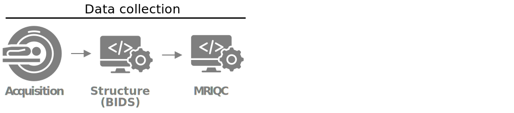
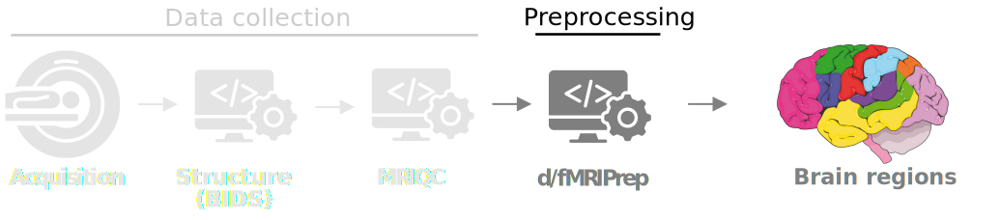
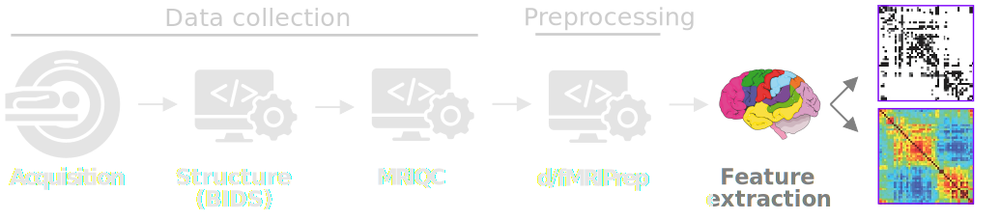
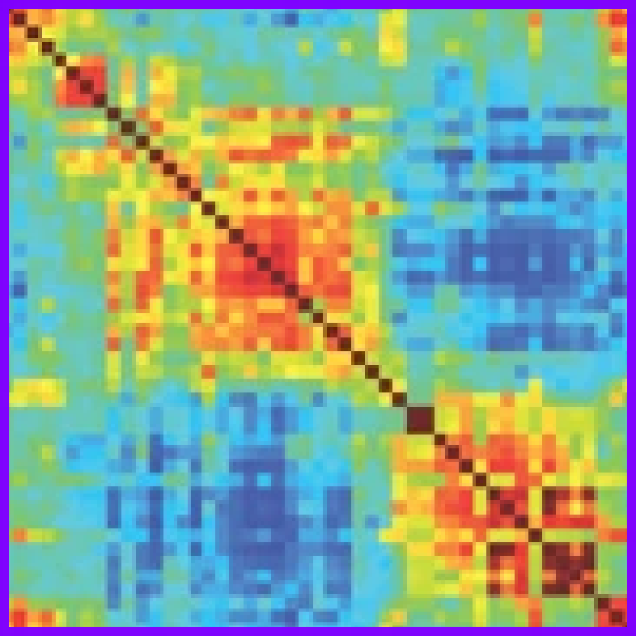
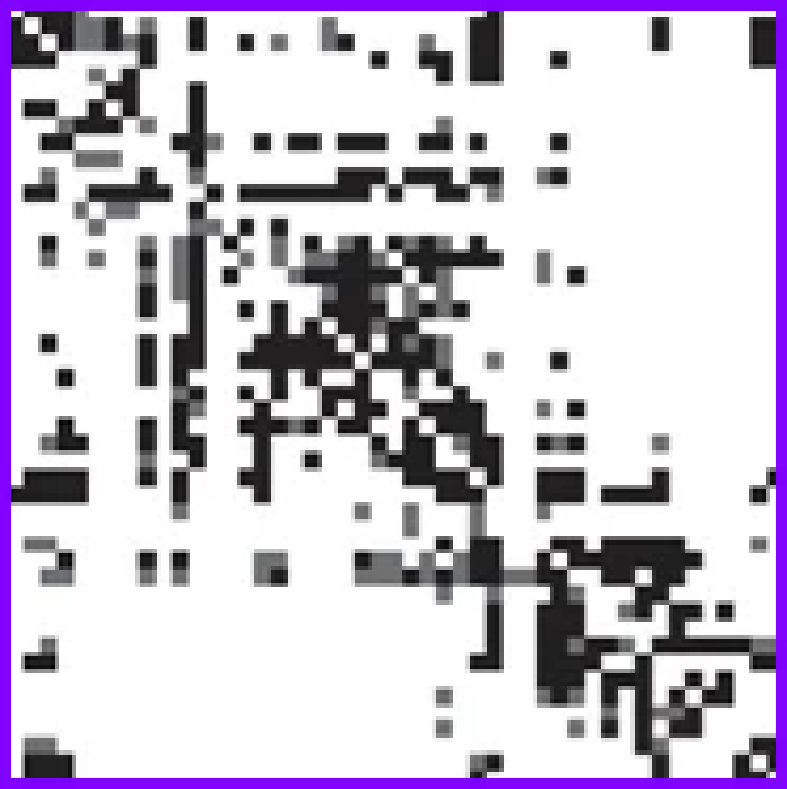
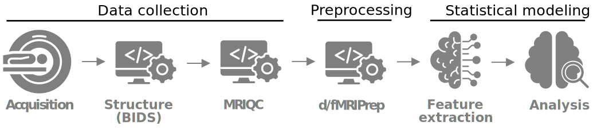
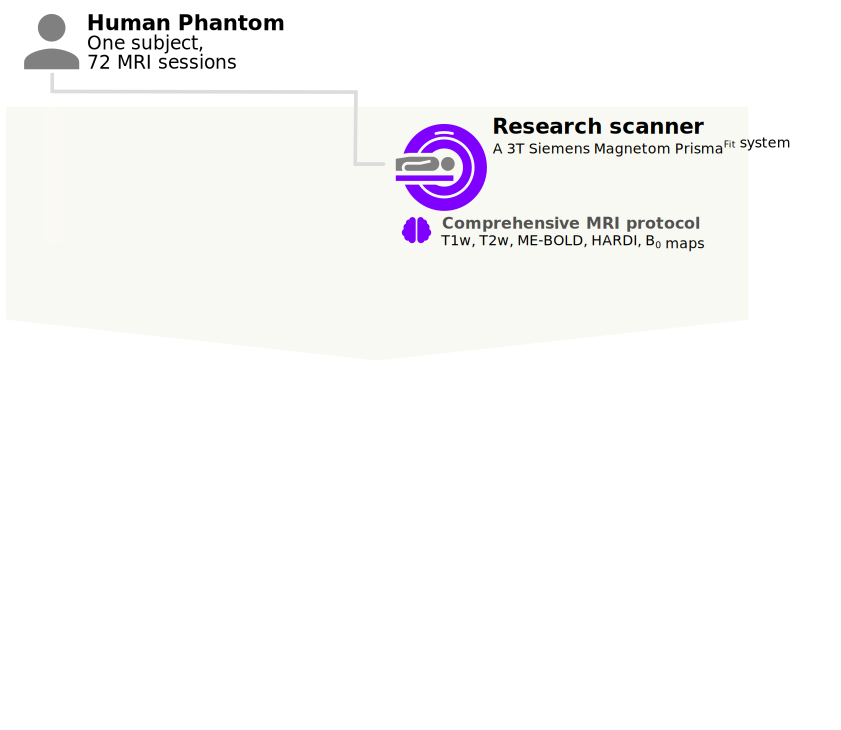
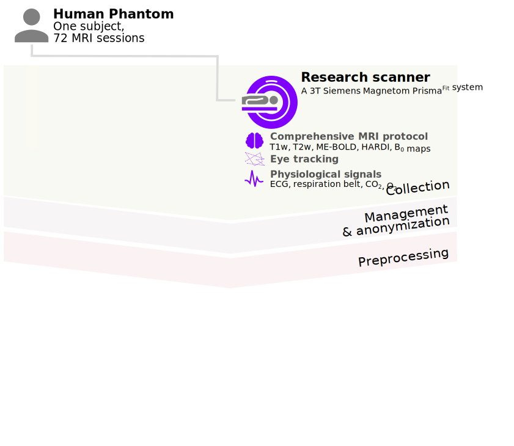

name: title layout: true class: center --- layout: false count: false .center[ <a href="https://oesteban.github.io/talks/20250820-medgift/"> <object type="image/svg+xml" data="images/qr-talk-url.svg" style="width: 20%"></object> <br /> https://oesteban.github.io/talks/20250820-medgift/ </a> <br /> <br /> ## Harnessing the reliability of neuroimaging bottom-up Oscar Esteban <<code>phd@oscaresteban.es</code>> <br /> ### Presentation at MEDGIFT's meeting ‚Äî 20.08.2025 ] ??? --- layout: false count: false .center[ <a href="https://oesteban.github.io/talks/20250820-medgift/"> <object type="image/svg+xml" data="images/qr-talk-url.svg" style="width: 20%"></object> <br /> https://oesteban.github.io/talks/20250820-medgift/ </a> <br /> <br /> ## Harnessing the reliability of neuroimaging bottom-up Oscar Esteban <<code>phd@oscaresteban.es</code>> <br /> ### Presentation at MEDGIFT's meeting ‚Äî 20.08.2025 ] ??? --- name: newsection layout: true .perma-sidebar[ <p class="rotate"> <a rel="license" href="http://creativecommons.org/licenses/by/4.0/"><img alt="Creative Commons License" style="border-width:0; height: 20px; padding-top: 6px;" src="https://i.creativecommons.org/l/by/4.0/88x31.png" /></a> <span style="padding-left: 10px; font-weight: 600;">Introducing Oscar Esteban | 20.08.2025</span> </p> ] --- # About me .right-column3.center[ (Link to slides) <a href="https://oesteban.github.io/talks/20250820-medgift/"> <object type="image/svg+xml" data="images/qr-talk-url.svg" style="width: 100%"></object> <br /> https://oesteban.github.io/talks/20250820-medgift/ </a> ] .pad-top.left-column3[ .people-table.larger[ | | | |---:|---| |  | **Oscar Esteban** <br /> Associate UAS Professor, HES-SO <br /> Head of [AxonLab](https://www.axonlab.org) <br /><br /> .small[Ph.D. (2015) @ Universidad Polit√©cnica de Madrid] <br /> .small[PD (2020) @ Stanford University] <br /> .small[Ambizione (2025) @ CHUV] | ] <br /> .large.center[I'm a **computational neuroscientist** <br /> and **open science** advocate.] <br /> <br /> .larger[***Mental* health‚Äîboth human and machine‚Äî**is becoming the next big challenge.] Hallucinations ¬∑ Confabulation ¬∑ Cognitive overload ¬∑ Forgetting ¬∑ Delusions ¬∑ Bias ¬∑ Attention ¬∑ Agency ¬∑ Emergent Behavior ] --- .boxed-content.large.no-bullet[ * <i class="fa-solid fa-circle-right"></i> .larger[**Context**] .indent[ .gray-text[Structural and functional connectivity of the brain] ] * <i class="fa-solid fa-circle-right"></i> .larger[**The Human Connectome PHantom (HCPh)**] .indent[ .gray-text[A New Standard for Dense, Multi-Modal Neuroimaging] ] * <i class="fa-solid fa-circle-right"></i> .larger[**Major achievements**] .indent[ .gray-text[Standardization in neuroimaging] .gray-text[Open Science advocacy, training, and mentorship] ] ] ??? --- count:false .boxed-content.large.no-bullet[ * <i class="fa-solid fa-circle-right"></i> .larger[**Context**] .indent[ .gray-text[Structural and functional connectivity of the brain] ] * <i class="fa-solid fa-circle-right fa-solid-dim"></i> .larger.dim[**The Human Connectome PHantom (HCPh)**] .indent[ .dimgray-text[A New Standard for Dense, Multi-Modal Neuroimaging] ] * <i class="fa-solid fa-circle-right fa-solid-dim"></i> .larger.dim[**Major achievements**] .indent[ .dimgray-text[Standardization in neuroimaging] .dimgray-text[Open Science advocacy, training, and mentorship] ] ] ??? I work in neuroimaging, specifically on structural and functional connectivity, which involves mapping how different parts of the brain interconnect and communicate. In many ways, these analyses are reminiscent of graph-related machine learning problems‚Äînodes, edges, and so forth‚Äî --- # The research workflow of connectivity analyses .boxed-content[ <object type="image/svg+xml" data="../assets/neuroimaging-workflow-large.svg" style="width: 100%"></object> .center[ [Esteban et al., (2020)](http://doi.org/10.1038/s41596-020-0327-3); [Niso et al., (2022)](https://doi.org/10.1016/j.neuroimage.2022.119623) ] ] ??? In broad strokes, this is the MRI-based connectivity analysis pipeline. Interestingly, it looks like any machine learning pipeline: we acquire data, perform quality control, preprocess it, define features, and then apply statistical modeling to extract insights. For a deeper dive into the details of the neuroimaging worflow, I've participated in several efforts such as the two references given below. --- count:false # The research workflow of connectivity analyses .boxed-content[  .center[ [Esteban et al., (2017)](https://doi.org/10.1371/journal.pone.0184661); [Provins et al., (2023)](https://doi.org/10.3389/fnimg.2022.1073734); <br /> [Provins et al., (2024, *Stage 2 RR under review*)](https://doi.org/10.1101/2024.10.11.617777) [Hagen et al., (2024, *under review*)](https://doi.org/10.1101/2024.10.21.619532) ] <br /> .no-bullet[ * .larger[<i class="fa-solid fa-clipboard-list"></i> Run the **MRI experiment** following Standard Operating Procedures (SOPs)] * <i class="fa-solid fa-folder-tree"></i> .larger[**Standardized data structure** (BIDS‚ÄîBrain Imaging Data Structure)] * .larger[<i class="fa-solid fa-square-check"></i> **QA/QC** (Quality assurance / control)] ] ] ??? The pipeline starts with data acquisition, management and quality assurance and control (QA/QC). My early work on QA/QC applied machine learning to automatically assess MRI images of the brain, and raised awareness over issues like ‚Äúsite effects‚Äù‚Äîwhere data from different scanners or labs can systematically vary, much like ‚Äúbatch effects‚Äù in genomics. One key principle in AI is that models are only as good as their data and neuroimaging is no exception. This is why my group and I have been deeply involved in BIDS, produced version-controlled, machine-readable standard operating procedures, developed comprehensive QA/QC protocols and created ready-to-use applications to detect suboptimal data early. --- count:false # The research workflow of connectivity analyses .boxed-content[  .center[ [Esteban et al., (2019)](https://doi.org/10.1038/s41592-018-0235-4); [Ciric et al., (2022)](https://doi.org/10.1038/s41592-022-01681-2); [Adebimpe et al., (2022)](https://doi.org/10.1038/s41592-022-01458-7) ] <br /> .no-bullet[ * .larger[<i class="fa-solid fa-smog"></i> Detection of **nuisance sources**] * .larger[<i class="fa-solid fa-magnifying-glass-location"></i> Spatiotemporal **location** of signals] * .larger[<i class="fa-solid fa-location-crosshairs"></i> Definition of **brain units** of analysis (regions)] ] ] ??? Next in the pipeline is preprocessing, which transforms raw data into something models can reliably interpret. For example, it identifies signals of no interest for their cleaning or accounting within modeling. In neuroimaging, preprocessing also deals with accurately locating signals and objects in space and time, and often the definition of relevant brain regions that focus the analysis. A decade ago, we might have called it ‚Äúfeature engineering.‚Äù Regardless of the term, it‚Äôs crucial: ‚Äúpreprocessing‚Äù is now a keyword in job posts at major players like Anthropic, DeepMind, and OpenAI. --- # fMRIPrep: despite minimal, a complex workflow .boxed-content.center[ <br /> <br /> <img src="https://github.com/oesteban/fmriprep/raw/f4c7a9804be26c912b24ef4dccba54bdd72fa1fd/docs/_static/fmriprep-21.0.0.svg" width="100%" /> ] ??? Here I'm showing a very much simplified overview of fMRIPrep's design. Despite it being just "minimal" preprocessing and just one step of the pipeline, its complexity is evident. Rather than delving into each of these steps, I'll just say that there's a current need to update and improve computer vision algorithms and approaches (segmentation, image registration, dimensionality reduction, etc.) with AI/ML all across the dataflow. --- # The research workflow of connectivity analyses .boxed-content[  .center[ [Thompson et al., (2021, *under review*)](https://doi.org/10.1101/2021.01.16.426941); [Rodrigue et al., (2021)](https://doi.org/10.1016/j.bpsc.2020.12.002); [Li et al., (2024)](https://doi.org/10.1038/s41562-024-01942-4) ] ] .pull-right[  <br /> **Functional Connectivity (FC)** <br /> .gray-text[Synchronized BOLD co-variation between brain regions] ] .pull-left.align-right[  <br /> **Structural Connectivity (SC)** <br /> .gray-text[Tracked water diffusion pathways between brain regions] ] ??? Once data are ready for analysis, we formalize connectivity as undirected acyclic graphs, represented with symmetric matrices. In the case of structural connectivity, we use diffusion MRI to track pathways of white-matter bundles connecting brain regions. For functional connectivity we measure synchronized functional MRI signal fluctuations sensitive to the dynamic oxygen content in blood. I‚Äôve been involved in several works applying structural and functional connectivity. For instance, in Rodrigue 2021, we explored ML approaches to identify clinical biomarkers. Unfortunately, we had to conclude that, despite promising data quality and reliability remain insufficient for robust biomarker discovery. --- # Despite active research, no real-world application .boxed-content[ .center[  ] <br /> .no-bullet[ * .large[<i class="fa-solid fa-triangle-exclamation"></i> Alarming **analytical variability**:] * .larger[Structural MRI [[Maier-Hein et al., (2017)](https://doi.org/10.1038/s41467-017-01285-x)]] - w/ J.-P. Thiran * .larger[Functional MRI [[Botvinik-Nezer et al., (2020)](https://doi.org/10.1038/s41586-020-2314-9)]] - w/ R. Poldrack * .large[<i class="fa-solid fa-handshake-simple"></i> Incipient **standardization**] .larger[[[Esteban, (2025)](https://doi.org/10.1007/978-1-0716-4260-3_8)]] ] ] ??? Therefore, although simple on the surface, the workflow is highly-complex and each step introduces potential variability. Complicating matters further, every lab around the world might use a slightly different pipeline. Different tools, different parameters‚Äîlead to inconsistent results. This fragmentation hinders progress and precludes between-study comparisons. The consequence is an acute scarcity of real-world applications of connectivity analyses. Let's compare to genomics. Neuroimaging is today in an early stage of standardization akin to genomics at the conclusion of the Human Genome Project in 2003. One key aspect for the remarkable advance of genomics is precisely the comprehensive standardization process of the pipeline that culminated some 10 years ago. For that reason, I advocate for replicating this success experience in neuroscience. --- count: false # Despite active research, no real-world application .boxed-content[ .center[ ] <br /> .no-bullet[ * .large[<i class="fa-solid fa-triangle-exclamation"></i> Alarming **analytical variability**:] * .larger[Structural MRI [[Maier-Hein et al., (2017)](https://doi.org/10.1038/s41467-017-01285-x)]] - w/ J.-P. Thiran * .larger[Functional MRI [[Botvinik-Nezer et al., (2020)](https://doi.org/10.1038/s41586-020-2314-9)]] - w/ R. Poldrack * .large[<i class="fa-solid fa-handshake-simple"></i> Incipient **standardization**] .larger[[[Esteban, (2025)](https://doi.org/10.1007/978-1-0716-4260-3_8)]] <br /> * .large[<i class="fa-solid fa-triangle-exclamation"></i> Notorious **test-retest unreliability**] ] ] ??? On top of all that methodological variability, there‚Äôs also inherent unreliability in measuring connectivity from session to session. If you scan the same participant twice, back-to-back, you can still get different connectivity measurements, indicating limited test-retest reliability. Despite all these concerns, more than 20 thousand papers were published focusing on functional connectivity and 10 thousand on structural connectivity in 2024, as per Pubmed. --- count:false .boxed-content.large.no-bullet[ * <i class="fa-solid fa-circle-right fa-solid-dim"></i> .larger.dim[**Context**] .indent[ .dimgray-text[Structural and functional connectivity of the brain] ] * <i class="fa-solid fa-circle-right"></i> .larger[**The Human Connectome PHantom (HCPh)**] .indent[ .gray-text[A New Standard for Dense, Multi-Modal Neuroimaging] ] * <i class="fa-solid fa-circle-right fa-solid-dim"></i> .larger.dim[**Major achievements**] .indent[ .dimgray-text[Standardization in neuroimaging] .dimgray-text[Open Science advocacy, training, and mentorship] ] * <i class="fa-solid fa-circle-right fa-solid-dim"></i> .larger.dim[**Grant timeline**] ] ??? Having deeply focused on the standardization to address analytical variability, in 2020 I started to work on the reliability problem of connectivity analysis. Tat that moment, I identified that the neuroimaging community was lacking an ultra-dense, calibration-grade dataset to address the problem. With the support of an Ambizione project, I launched the Human Connectome Phantom project. The idea is to have a single subject‚Äîmyself‚Äîscanned intensively within a very short time window to minimize brain changes (and hence, serve as a "phantom" reference). The dataset needed to combine sophisticated functional and structural MR acquisitions, and a wealth of physiological tracking. --- ## HCPh: An ultra-dense, calibration dataset .right-column3[ Time span: 6 weeks Functional and Structural Connectivity Comprehensive physio & eye tracking Emphasis on technical aspects: * fieldmaps * high-angular resolution, multishell DWI with doubled-orientations * multi-echo fMRI * positive-control task * breath-holding task Naturalistic movie (cognition state variability) Peer-reviewed pre-registration ] .left-column3[ <br /> ] ??? As mentioned, I lent myself as the phantom given the hefty commitment the project involved and the total absence of antecedents of a human being scanned so frequently. --- count:false ## HCPh: An ultra-dense, calibration dataset .right-column3[ Time span: 6 weeks Functional and Structural Connectivity Comprehensive physio & eye tracking Emphasis on technical aspects: * fieldmaps * high-angular resolution, multishell DWI with doubled-orientations * multi-echo fMRI * positive-control task * breath-holding task Naturalistic movie (cognition state variability) Peer-reviewed pre-registration ] .left-column3[ <br /> ] ??? First, our study focused on a single scanner at CHUV. We collected a very comprehensive MRI protocol with technical sophistication to provide a solid foundation to secondary methodological developments. --- count:false ## HCPh: An ultra-dense, calibration dataset .right-column3[ Time span: 6 weeks Functional and Structural Connectivity Comprehensive physio & eye tracking Emphasis on technical aspects: * fieldmaps * high-angular resolution, multishell DWI with doubled-orientations * multi-echo fMRI * positive-control task * breath-holding task Naturalistic movie (cognition state variability) Peer-reviewed pre-registration ] .left-column3[ <img src="../assets/hcph-02.svg" width="90%" /><br /> ] ??? We collected eye-tracking to assess arousal and analyze correlation with other facets such as head motion. --- count:false ## HCPh: An ultra-dense, calibration dataset .right-column3[ Time span: 6 weeks Functional and Structural Connectivity Comprehensive physio & eye tracking Emphasis on technical aspects: * fieldmaps * high-angular resolution, multishell DWI with doubled-orientations * multi-echo fMRI * positive-control task * breath-holding task Naturalistic movie (cognition state variability) Peer-reviewed pre-registration ] .left-column3[ <img src="../assets/hcph-03.svg" width="90%" /><br /> ] ??? We also obtained a wealth of signals to investigate physiological variability, including expired oxygen and CO2 (which is far from standard practice but needed). --- count:false ## HCPh: An ultra-dense, calibration dataset .right-column3[ Time span: 6 weeks Functional and Structural Connectivity Comprehensive physio & eye tracking Emphasis on technical aspects: * fieldmaps * high-angular resolution, multishell DWI with doubled-orientations * multi-echo fMRI * positive-control task * breath-holding task Naturalistic movie (cognition state variability) Peer-reviewed pre-registration ] .left-column3[ <img src="../assets/hcph-04.svg" width="90%" /><br /> ] ??? This first wave of data was collected in about 3 weeks to ensure minimal changes on the human brain phantom. --- count:false ## HCPh: An ultra-dense, calibration dataset .right-column3[ Time span: 6 weeks Functional and Structural Connectivity Comprehensive physio & eye tracking Emphasis on technical aspects: * fieldmaps * high-angular resolution, multishell DWI with doubled-orientations * multi-echo fMRI * positive-control task * breath-holding task Naturalistic movie (cognition state variability) Peer-reviewed pre-registration ] .left-column3[ <img src="../assets/hcph-05.svg" width="90%" /><br /> ] ??? Data were then standardized, properly stored under version control, and quality-controlled. --- count:false ## HCPh: An ultra-dense, calibration dataset .right-column3[ Time span: 6 weeks Functional and Structural Connectivity Comprehensive physio & eye tracking Emphasis on technical aspects: * fieldmaps * high-angular resolution, multishell DWI with doubled-orientations * multi-echo fMRI * positive-control task * breath-holding task Naturalistic movie (cognition state variability) Peer-reviewed pre-registration ] .left-column3[ <br /> ] ??? We preprocessed the data with NiPreps --- count:false ## HCPh: An ultra-dense, calibration dataset .right-column3[ Time span: 6 weeks Functional and Structural Connectivity Comprehensive physio & eye tracking Emphasis on technical aspects: * fieldmaps * high-angular resolution, multishell DWI with doubled-orientations * multi-echo fMRI * positive-control task * breath-holding task Naturalistic movie (cognition state variability) Peer-reviewed pre-registration ] .left-column3[ <img src="../assets/hcph-07.svg" width="90%" /><br /> ] ??? Next comes connectivity extraction. --- count:false ## HCPh: An ultra-dense, calibration dataset .right-column3[ Time span: 6 weeks Functional and Structural Connectivity Comprehensive physio & eye tracking Emphasis on technical aspects: * fieldmaps * high-angular resolution, multishell DWI with doubled-orientations * multi-echo fMRI * positive-control task * breath-holding task Naturalistic movie (cognition state variability) Peer-reviewed pre-registration ] .left-column3[ <img src="../assets/hcph-08.svg" width="90%" /><br /> ] ??? And this process yielded at least 36 pairs of structural and functional matrices. --- count:false ## HCPh: An ultra-dense, calibration dataset .right-column3[ Time span: 6 weeks Functional and Structural Connectivity Comprehensive physio & eye tracking Emphasis on technical aspects: * fieldmaps * high-angular resolution, multishell DWI with doubled-orientations * multi-echo fMRI * positive-control task * breath-holding task Naturalistic movie (cognition state variability) Peer-reviewed pre-registration ] .left-column3[ <img src="../assets/hcph-09.svg" width="90%" /><br /> ] ??? But we also wanted to test agreement between scanners. To do so, we modified the protocol so that it would be suitable for the two clinical scanners with more limited performance. We collected 12 more sessions on the research scanner with the homogenized protocol. --- count:false ## HCPh: An ultra-dense, calibration dataset .right-column3[ Time span: 6 weeks Functional and Structural Connectivity Comprehensive physio & eye tracking Emphasis on technical aspects: * fieldmaps * high-angular resolution, multishell DWI with doubled-orientations * multi-echo fMRI * positive-control task * breath-holding task Naturalistic movie (cognition state variability) Peer-reviewed pre-registration ] .left-column3[ <img src="../assets/hcph-10.svg" width="90%" /><br /> ] ??? And 12 more sessions per scanner on the two clinical scanners. --- count:false ## HCPh: An ultra-dense, calibration dataset .right-column3[ Time span: 6 weeks Functional and Structural Connectivity Comprehensive physio & eye tracking Emphasis on technical aspects: * fieldmaps * high-angular resolution, multishell DWI with doubled-orientations * multi-echo fMRI * positive-control task * breath-holding task Naturalistic movie (cognition state variability) Peer-reviewed pre-registration ] .left-column3[ <img src="../assets/hcph-full.svg" width="90%" /><br /> ] ??? Finally, we committed to release all materials (data, code, operating procedures, etc.) open. --- ## HCPh: Registered-report driven .right-column3[ .larger.center[ .large[**Stage 1 RR**] <br /> Nature Methods <a href="https://doi.org/10.17605/OSF.IO/VAMQ6"> Provins et al., (2023)</a> ] ] .left-column3[ <img src="../assets/hcph-full.svg" width="90%" /><br /> ] ??? The study was accepted in October 2023 as a Stage 1 Registered Report at Nature Methods. The registered report, data collection, and the research was carried out by a large team, with the outstanding role of the Ph.D. student funded by the Ambizione (Celine Provins), and is accessible with the QR code. By pre-registering, we locked in our hypotheses and methods up front and addressed design issues raised by three reviewers before data collection started. --- # Why the Registered Report Approach .boxed-content.large.no-bullet[ * <i class="fa-solid fa-circle-right"></i> .larger[**Pre-Approved Study Design**] .indent[ .gray-text[Hypotheses, protocols, and analyses peer-reviewed before data collection] ] * <i class="fa-solid fa-circle-right"></i> .larger[**Transparency & Rigor**] .indent[ .gray-text[Minimizes biases, ‚Äúp-hacking,‚Äù and the garden of forking paths] ] * <i class="fa-solid fa-circle-right"></i> .larger[**Drawbacks**] .indent[ .gray-text[Challenging pre-registration report preparation, slow review process] ] ] ??? Registered Reports reduce biases and ensure transparency as it removes incentives to drive the results and interpretation. Why? Because with the acceptance of the Stage 1, journals commit to publish the final work (or Stage 2) regardless of the final outcomes. Given that the HCPh is intended as a foundational reference dataset, it was crucial that the design itself was peer-reviewed. Registered reports are not free of caveats. With the communal improvement of scientific endeavors, we will be able to shorten the preparation time of pre-registered analysis and ensure that peer-review does not excessively delays the onset of data collection. --- # HCPh: Study Outcomes .boxed-content.no-bullet.pad-top[ * .large.pad-top[<i class="fa-solid fa-database"></i> One-of-a-kind, open **dataset**] .indent[ .gray-text[Thoroughly documented, with open [Standard Operating Procedures (SOPs)](https://www.axonlab.org/hcph-sops)] ] * .large[<i class="fa-solid fa-chart-bar"></i> Within-scanner **reliability characterization**] .indent[ .gray-text[PCA-based modeling of FC residuals] .gray-text[Bayesian modeling of SC] ] * .large[<i class="fa-solid fa-scale-balanced"></i> Between-scanner **agreement**] .indent[ .gray-text[One research scanner vs. two clinical scanners] ] ] ??? We are currently concluding the final Stage 2 reporting the results, to be submitted to the journal within the next 3-4 months. We have collected and preprocessed a unique dataset and publicly released its comprehensive standard operating procedures. Following our pre-registered commitments, we are currently executing our promised analysis involving principal components analyses of functional connectivity and bayesian modelling of structural connectivity. Finally, we will investigate how structural and functional connectivity measurements agree if obtained with different devices. This will yield a baseline measure of how stable connectivity metrics can be if the protocol is maximally controlled. --- # HCPh: Significance <br /> .boxed-content.no-bullet[ * .large.pad-top[<i class="fa-solid fa-ruler"></i> Complement standardization with **calibration**] .indent[ .gray-text[Provide normative distributions of SC and FC (prior knowledge)] .gray-text[An approach to design *calibrated* studies, potentially with the same or new **human phantoms**] ] * .large[<i class="fa-solid fa-route"></i> Methodological **advance**] .indent[ .gray-text[Removal of physiological variability, artifacts, etc.] .gray-text[Between-scanner agreement of measurements (other than connectivity)] ] * .large[<i class="fa-solid fa-building-columns"></i> A **foundational dataset**] .indent[ .gray-text[SC & FC training dataset] .gray-text[Fully-open, ideal for courses and training] ] ] ??? But the impact of HCPh goes far beyond the analyses committed within the Stage 1 report. We hope to see new ‚Äúhuman phantom‚Äù datasets at multiple sites, enabling direct cross-site calibration. HCPh can also serve as ground truth data for AI-driven motion-correction algorithms, generative modeling, or even real-time scanning protocols. Essentially, we‚Äôre complementing standardization efforts (like NiPreps) with a calibration resource that addresses test-retest and multi-site reproducibility. --- count:false .boxed-content.large.no-bullet[ * <i class="fa-solid fa-circle-right fa-solid-dim"></i> .larger.dim[**Context**] .indent[ .dimgray-text[Structural and functional connectivity of the brain] ] * <i class="fa-solid fa-circle-right fa-solid-dim"></i> .larger.dim[**The Human Connectome PHantom (HCPh)**] .indent[ .dimgray-text[A New Standard for Dense, Multi-Modal Neuroimaging] ] * <i class="fa-solid fa-circle-right"></i> .larger[**Major achievements**] .indent[ .gray-text[Standardization in neuroimaging] .gray-text[Open Science advocacy, training, and mentorship] ] ] ??? Let's move now into highlighting two of my achievements as per the SNSF definition. --- # Standardization in neuroimaging‚ÄîNiPreps .boxed-content[ <br /> .larger.center[ "*analysis-grade*" data <i class="fa-solid fa-circle-right"></i> data **directly consumable by analyses** ] .pull-left[ <br /> <br /> *Analysis-grade* data is an analogy to the concept of "*sushi-grade (or [sashimi-grade](https://en.wikipedia.org/wiki/Sashimi)) fish*" in that both are: .large[<i class="fa-solid fa-circle-right"></i> **minimally preprocessed**,] and .large[<i class="fa-solid fa-circle-right"></i> **safe to consume** directly.] ] .pull-right.center[ <a href="https://www.nipreps.org"><br /> www.nipreps.org</a> ] ] ??? In computational neuroscience I'm recognized by my standardization efforts. NiPreps is a framework for standardized preprocessing pipelines in neuroimaging. I often use the ‚Äúsushi-grade‚Äù analogy just like sushi-grade fish is minimally processed but safe to consume, NiPreps yields ‚Äúanalysis-grade‚Äù data, with minimal processing interventions but ready for direct machine learning ingestion. --- <p align="center"> <img src="../assets/nipreps-chart.png" width="63%" /><br /> <em>NiPreps</em> (<a href="https://doi.org/10.31219/osf.io/ujxp6">Esteban et al., 2020</a>) </p> ??? Here‚Äôs the basic architecture. It‚Äôs an ecosystem of modular tools at different levels of abstraction, offering space for AI/ML innovation all accross individual computer vision tasks. --- # Standardization in neuroimaging‚Äîimpact .boxed-content.larger.no-bullet[ * .large[<i class="fa-solid fa-hands-clapping"></i> **Not just wide adoption**] .indent[.gray-text[Used in large neuroscientific endeavors: ENIGMA] .gray-text[Industry: [Flywheel's gears for *MRIQC* and *fMRIPrep*](https://flywheel.io/insights/blog/comprehensive-support-bids#:~:text=The%20Flywheel%20Gear%20Exchange%20currently,to%20download%20your%20entire), [Amazon Web Services featured *fMRIPrep*](https://aws.amazon.com/blogs/opensource/fmri-data-preprocessing-aws-fmriprep/#:~:text=itself,efforts%20on%20preprocessing%20fMRI%20data), [QMENTA's RS fMRI tool derived from *fMRIPrep*](https://catalog.qmenta.com/tool/resting-state-fmri#:~:text=Catalog%20catalog,Networks%3B%20%E2%80%A2%20Salience%20Network) ] .gray-text[Relevant works: [Caucheteux, Gramfort & King, (2023)](https://doi.org/10.1038/s41562-022-01516-2), [Tozzi et al., (2024)](https://doi.org/10.1038/s41591-024-03057-9), [Hyon et al., (2020)](https://doi.org/10.1073/pnas.2013606117), [Yamashita et al., (2020)](https://doi.org/10.1371/journal.pbio.3000966). ] ] * .large[<i class="fa-solid fa-people-group"></i> **Built a Lasting Community**] .indent[ .gray-text[100+ researchers engaged in the community worldwide] .gray-text[Community is critical to provide a footing for standardization (following BIDS' experience)] ] * .large[<i class="fa-solid fa-industry"></i> **DevOps-inspired standardization**] .indent[ .gray-text[Reducing the gap between research and application reversing the transference flow] ] ] ??? Beyond citations and the staggering usage figures I showed in my first presentation, NiPreps is a major achievement by DORA principles. NiPreps is used in large consortia like ENIGMA, given a foundation to pioneering clinical applications such as Tozzi 2024, and is offered by major industry players like Flywheel, QMENTA, and even AWS workflows. The NiPreps framework is driven by a community involving more than 100 scientist globally and their adoption continues growing. That‚Äôs the real impact: it‚Äôs changing how people conduct imaging studies and ensuring higher data quality across labs. One distinct reason for success is that we contributed to bridge the gap between research and real-world applicationi by reversing the typical knowledge transference flow: We integrate software engineering best practices from devops and industry for the standardization and solidification of the neuroimaging workflow. --- # Open Science Advocacy, Training, & Mentorship .boxed-content.larger.no-bullet[ * .large[<i class="fa-solid fa-code"></i> **Open Source** and **transparent research**] .indent[ .gray-text[[2,000+ code contributions/years on GitHub](https://github.com/oesteban) across 80+ repositories] .gray-text[RRs (two ü°í Stage 2, one ü°í Stage 1)] ] * .large[<i class="fa-solid fa-school"></i> **Off-curriculum, hands-on training**] .indent[ .gray-text[NeuroImaging in Practice ([NiPraxis](https://nipraxis.org)) course] .gray-text[[CIBM/fMRIPrep bootcamp](https://cibm.ch/first-ever-cibm-bootcamp-on-fmriprep-a-major-success/)] .gray-text[Hackathons, BrainHacks, etc.] ] * .large[<i class="fa-solid fa-handshake-angle"></i> **Mentorship & Peer Support**] .indent[ .gray-text[Active in online support of other scientists] .gray-text[[AxonLab](https://www.axonlab.org) research group (with Provins graduating today!)] ] ] ??? My second major achievement revolves around open science advocacy, training, and mentorship. In practice, this means: Contributing to over 2,000 code commits per year across more than 80 open repositories. Embracing Registered Reports to ensure rigorous methodology and better research planification, as opposed to brute-force trial and error. Indeed, registered reports will become central to prospectively implementing trustworthy and interpretable models, in contrast to retrospective assurance. Organizing **hands-on training** like **NiPraxis** and the **CIBM/fMRIPrep Bootcamp** so newcomers can quickly adopt reproducible pipelines. Leading **hackathons** and **BrainHacks** to foster a collaborative environment where diverse skill sets merge. Finally, **mentorship** is key. Through my **AxonLab research group** and broader community support, I help early-career scientists gain confidence and skill in open science practices. (Actually, right after this interview, I‚Äôll be heading to our PhD student Celine Provins‚Äô public defense‚Äîan exciting milestone for our open-science journey!) --- count:false .boxed-content.large.no-bullet[ * <i class="fa-solid fa-circle-right fa-solid-dim"></i> .larger.dim[**Context**] .indent[ .dimgray-text[Structural and functional connectivity of the brain] ] * <i class="fa-solid fa-circle-right fa-solid-dim"></i> .larger.dim[**The Human Connectome PHantom (HCPh)**] .indent[ .dimgray-text[A New Standard for Dense, Multi-Modal Neuroimaging] ] * <i class="fa-solid fa-circle-right fa-solid-dim"></i> .larger.dim[**Major achievements**] .indent[ .dimgray-text[Standardization in neuroimaging] .dimgray-text[Open Science advocacy, training, and mentorship] ] ] ??? Let's move into my future research plans. --- # Conclusion & Next Steps .boxed-content.large.no-bullet[ * <i class="fa-solid fa-brain"></i> .larger[Leadership in **Neurocomputing & Neuroimaging**] .indent[ .gray-text[] ] * <i class="fa-solid fa-robot"></i> .larger[**ML/AI Integration**] .indent[ .gray-text[] ] * <i class="fa-solid fa-network-wired"></i> .larger[**Software & Standardization (S&S)**] .indent[ .gray-text[] ] * <i class="fa-solid fa-torch"></i> .larger[**Clear roadmap**] .indent[ .gray-text[] ] ] ??? --- layout: false count: false .center[ <a href="https://oesteban.github.io/talks/20250820-medgift/"> <object type="image/svg+xml" data="images/qr-talk-url.svg" style="width: 20%"></object> <br /> https://oesteban.github.io/talks/20250820-medgift/ </a> <br /> <br /> # Thank you Oscar Esteban <<code>phd@oscaresteban.es</code>> ] ???